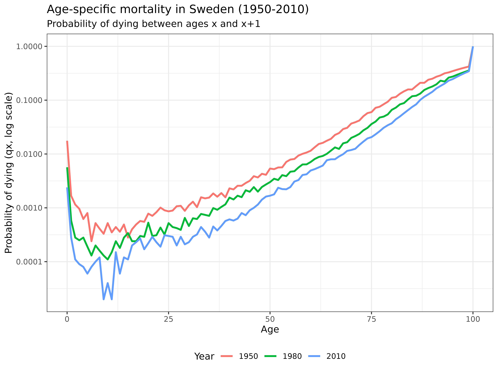

vignettes/1_1_OneSex_TimeInvariant_Age.Rmd
1_1_OneSex_TimeInvariant_Age.RmdLearning Objectives: In this tutorial, you will learn how to use the DemoKin package to analyze kinship networks, understand the mechanics of one-sex time-invariant models, and visualize kinship dynamics across the life course.
Kinship is a fundamental property of human populations and a key form of social structure. Demographers have long been interested in the interplay between demographic change and family configuration. This has led to the development of sophisticated methodological and conceptual approaches for the study of kinship, some of which are explored in this tutorial.
Kinship analysis can answer a range of important questions:
In this tutorial, we will implement matrix kinship models using the
DemoKin package to calculate kin counts and age
distributions. We begin with the simplest model: a
time-invariant one-sex model, outlined in Caswell (2019). In this model, we assume that everyone
in the population experiences the same mortality and fertility rates
throughout their lives (e.g., the 2015 rates), and we only trace female
kin relationships.
Before starting the session, please ensure you complete the following preparatory steps:
# Install basic data analysis packages
rm(list = ls())
install.packages("dplyr") # Data manipulation
install.packages("tidyr") # Data tidying
install.packages("ggplot2") # Data visualization
install.packages("knitr") # Document generation
# Install DemoKin
# DemoKin is available on CRAN (https://cran.r-project.org/web/packages/DemoKin/index.html),
# but we'll use the development version on GitHub (https://github.com/IvanWilli/DemoKin):
install.packages("remotes")
remotes::install_github("IvanWilli/DemoKin")
library(DemoKin) # For kinship analysisThe DemoKin package includes Swedish demographic data
from the Human Mortality Database (HMD) and Human Fertility Database
(HFD) as an example dataset. This includes:
You can view all available data in the package with
data(package="DemoKin").
Let’s examine a subset of the Swedish demographic data to understand its structure:
# First 5 rows and columns of survival probabilities
head(swe_px[1:5, 1:5])## 1900 1901 1902 1903 1904
## 0 0.91060 0.90673 0.92298 0.91890 0.92357
## 1 0.97225 0.97293 0.97528 0.97549 0.97847
## 2 0.98525 0.98579 0.98630 0.98835 0.98921
## 3 0.98998 0.98947 0.99079 0.99125 0.99226
## 4 0.99158 0.99133 0.99231 0.99352 0.99272
# Fertility rates for ages 25-30
head(swe_asfr[26:31, 1:10])## 1900 1901 1902 1903 1904 1905 1906 1907 1908
## 25 0.18104 0.18322 0.17980 0.17339 0.17595 0.17445 0.17302 0.17246 0.17631
## 26 0.18762 0.19279 0.19170 0.18754 0.18431 0.18248 0.18763 0.18405 0.18594
## 27 0.19838 0.20267 0.19365 0.19035 0.19298 0.19016 0.19172 0.18634 0.18591
## 28 0.20742 0.20543 0.19983 0.19558 0.19680 0.19696 0.19541 0.19489 0.19251
## 29 0.20192 0.21060 0.20264 0.19938 0.19541 0.19482 0.19236 0.19205 0.19452
## 30 0.20518 0.20504 0.20148 0.19700 0.19511 0.19698 0.19862 0.19192 0.19245
## 1909
## 25 0.17423
## 26 0.18250
## 27 0.18912
## 28 0.19381
## 29 0.18839
## 30 0.18975For our time-invariant model, we need to extract the demographic rates for a single year. Let’s use 2015 as our reference year:
# Extract vectors for 2015
swe_surv_2015 <- swe_px[,"2015"] # Survival probabilities
swe_asfr_2015 <- swe_asfr[,"2015"] # Fertility ratesLet’s compare the data between different time periods to understand demographic changes. Here we compare values from 1950 and 2010:
# Survival probabilities
cat("Survival probabilities (px):\n")## Survival probabilities (px):## 1950 2010
## 0 0.98237 0.99760
## 1 0.99833 0.99972
## 2 0.99885 0.99989
## 3 0.99904 0.99991
## 4 0.99938 0.99992
## 5 0.99920 0.99994
# Fertility rates
cat("\nFertility rates (asfr):\n")##
## Fertility rates (asfr):## 1950 2010
## 0 0 0
## 1 0 0
## 2 0 0
## 3 0 0
## 4 0 0
## 5 0 0
# Population counts
cat("\nPopulation counts:\n")##
## Population counts:## 1950 2010
## 0 57780 54400
## 1 60451 53714
## 2 61288 53495
## 3 62970 53263
## 4 63089 51524
## 5 62963 51321Let’s visualize how mortality has changed over time. We’ll plot the probability of dying between ages and (denoted as ) for different years:
swe_px %>%
as.data.frame() %>%
mutate(age = c(0:100)) %>%
pivot_longer(cols = -c(age), names_to = "year", values_to = "px") %>%
filter(year %in% seq(1950, 2010, 30)) %>%
mutate(qx = 1-px) %>%
ggplot() +
geom_line(aes(x = age, y = qx, col = as.character(year)), linewidth = 1) +
scale_y_log10() +
labs(
title = "Age-specific mortality in Sweden (1950-2010)",
subtitle = "Probability of dying between ages x and x+1",
x = "Age",
y = "Probability of dying (qx, log scale)",
col = "Year"
) +
theme_bw() +
theme(legend.position = "bottom")
Interpretation: This graph reveals how mortality has declined dramatically across all age groups from 1950 to 2010. The log scale highlights improvements at all ages, with particularly notable declines in infant and child mortality. The characteristic “bathtub” shape of human mortality is clearly visible: high mortality in infancy, followed by very low mortality through childhood and early adulthood, then a steady exponential increase with age.
Now, let’s examine how fertility patterns have changed over time:
swe_asfr %>%
as.data.frame() %>%
mutate(age = c(0:100)) %>%
pivot_longer(cols = -c(age), names_to = "year", values_to = "fx") %>%
filter(year %in% seq(1950, 2010, 30)) %>%
ggplot() +
geom_line(aes(x = age, y = fx, col = as.character(year)), linewidth = 1) +
labs(
title = "Age-specific fertility in Sweden (1950-2010)",
subtitle = "Fertility rates by age of mother",
x = "Age of mother",
y = "Age-specific fertility rate (fx)",
col = "Year"
) +
theme_bw() +
theme(legend.position = "bottom")Interpretation: This visualization shows how fertility patterns have changed over the decades. The 1950 curve shows earlier childbearing with higher peak fertility rates. By 2010, fertility has shifted to later ages, reflecting the postponement of childbearing in developed countries. We can also observe the declining total fertility rate (the area under each curve).
Finally, let’s look at how the population structure has evolved:
swe_pop %>%
as.data.frame() %>%
mutate(age = c(0:100)) %>%
pivot_longer(-age, names_to = "year", values_to = "pop") %>%
mutate(year = gsub("X", "", year)) %>%
filter(year %in% seq(1950, 2010, 30)) %>%
ggplot() +
geom_line(aes(x = age, y = pop, col = as.character(year)), linewidth = 1) +
labs(
title = "Female population structure in Sweden (1950-2010)",
subtitle = "Population counts by age",
x = "Age",
y = "Population count (thousands)",
col = "Year"
) +
theme_bw() +
theme(legend.position = "bottom")Interpretation: This graph shows how Sweden’s female population structure has changed over time. The 1950 distribution shows the effects of baby booms and war years. By 2010, we see population aging with a more uniform distribution across ages and greater longevity, with significant numbers of women surviving to very old ages.
DemoKin is an R package designed to compute the number
and age distribution of relatives (kin) of a focal individual under
various demographic assumptions. It can analyze both living and deceased
kin, and allows for both time-invariant and time-varying demographic
rates.
kin() Function
The main function in the package is DemoKin::kin(),
which implements matrix kinship models to calculate expected kin
counts.
For our first example, we’ll run the simplest model with the following assumptions:
Let’s run the basic kinship model:
# Run the time-invariant, one-sex model
swe_2015 <- kin(
p = swe_surv_2015, # Vector of survival probabilities
f = swe_asfr_2015, # Vector of fertility rates
time_invariant = TRUE # Use time-invariant model
)The kin() function accepts several important
arguments:
In DemoKin, each type of relative is identified by a
unique code. These codes differ from those used in Caswell (2019). The following table shows the
relationship between these coding systems:
# Display relationship codes
demokin_codes## DemoKin Caswell Labels_female Labels_male
## 1 coa t Cousins from older aunts Cousins from older uncles
## 2 cya v Cousins from younger aunts Cousins from younger uncles
## 3 c <NA> Cousins Cousins
## 4 d a Daughters Sons
## 5 gd b Grand-daughters Grand-sons
## 6 ggd c Great-grand-daughters Great-grand-sons
## 7 ggm h Great-grandmothers Great-grandfathers
## 8 gm g Grandmothers Grandfathers
## 9 m d Mother Father
## 10 nos p Nieces from older sisters Nephews from older brothers
## 11 nys q Nieces from younger sisters Nephews from younger brothers
## 12 n <NA> Nieces Nephews
## 13 oa r Aunts older than mother Uncles older than fathers
## 14 ya s Aunts younger than mother Uncles younger than father
## 15 a <NA> Aunts Uncles
## 16 os m Older sisters Older brothers
## 17 ys n Younger sisters Younger brothers
## 18 s <NA> Sisters Brothers
## Labels_2sex
## 1 Cousins from older aunts/uncles
## 2 Cousins from younger aunts/uncles
## 3 Cousins
## 4 Children
## 5 Grand-childrens
## 6 Great-grand-childrens
## 7 Great-grandfparents
## 8 Grandparents
## 9 Parents
## 10 Niblings from older siblings
## 11 Niblings from younger siblings
## 12 Niblings
## 13 Aunts/Uncles older than parents
## 14 Aunts/Uncles younger than parents
## 15 Aunts/Uncles
## 16 Older siblings
## 17 Younger siblings
## 18 SiblingsThe kin() function returns a list containing two data
frames:
# Examine the structure of the output
str(swe_2015)## List of 2
## $ kin_full : tibble [142,814 × 7] (S3: tbl_df/tbl/data.frame)
## ..$ kin : chr [1:142814] "d" "d" "d" "d" ...
## ..$ age_kin : int [1:142814] 0 0 0 0 0 0 0 0 0 0 ...
## ..$ age_focal: int [1:142814] 0 1 2 3 4 5 6 7 8 9 ...
## ..$ living : num [1:142814] 0 0 0 0 0 0 0 0 0 0 ...
## ..$ dead : num [1:142814] 0 0 0 0 0 0 0 0 0 0 ...
## ..$ cohort : logi [1:142814] NA NA NA NA NA NA ...
## ..$ year : logi [1:142814] NA NA NA NA NA NA ...
## $ kin_summary: tibble [1,414 × 10] (S3: tbl_df/tbl/data.frame)
## ..$ age_focal : int [1:1414] 0 0 0 0 0 0 0 0 0 0 ...
## ..$ kin : chr [1:1414] "coa" "cya" "d" "gd" ...
## ..$ year : logi [1:1414] NA NA NA NA NA NA ...
## ..$ cohort : logi [1:1414] NA NA NA NA NA NA ...
## ..$ count_living : num [1:1414] 0.2752 0.0898 0 0 0 ...
## ..$ mean_age : num [1:1414] 8.32 4.05 NaN NaN NaN ...
## ..$ sd_age : num [1:1414] 6.14 3.68 NaN NaN NaN ...
## ..$ count_dead : num [1:1414] 0.0000633 0.000037 0 0 0 ...
## ..$ count_cum_dead: num [1:1414] 0.0000633 0.000037 0 0 0 ...
## ..$ mean_age_lost : num [1:1414] 0 0 NaN NaN NaN 0 0 0 0 NaN ...kin_full Data Frame
This data frame contains detailed information on expected kin counts by: - Age of the focal individual - Type of kin - Age of kin - Living/dead status
# View the first few rows of kin_full
head(swe_2015$kin_full)## # A tibble: 6 × 7
## kin age_kin age_focal living dead cohort year
## <chr> <int> <int> <dbl> <dbl> <lgl> <lgl>
## 1 d 0 0 0 0 NA NA
## 2 d 0 1 0 0 NA NA
## 3 d 0 2 0 0 NA NA
## 4 d 0 3 0 0 NA NA
## 5 d 0 4 0 0 NA NA
## 6 d 0 5 0 0 NA NAkin_summary Data Frame
This data frame provides a summary of expected kin counts by: - Age of the focal individual - Type of kin - Total counts (not broken down by age of kin)
# View the first few rows of kin_summary
head(swe_2015$kin_summary)## # A tibble: 6 × 10
## age_focal kin year cohort count_living mean_age sd_age count_dead
## <int> <chr> <lgl> <lgl> <dbl> <dbl> <dbl> <dbl>
## 1 0 coa NA NA 0.275 8.32 6.14 0.0000633
## 2 0 cya NA NA 0.0898 4.05 3.68 0.0000370
## 3 0 d NA NA 0 NaN NaN 0
## 4 0 gd NA NA 0 NaN NaN 0
## 5 0 ggd NA NA 0 NaN NaN 0
## 6 0 ggm NA NA 0.320 84.4 6.43 0.0287
## # ℹ 2 more variables: count_cum_dead <dbl>, mean_age_lost <dbl>One powerful way to visualize kinship structure is through a network or ‘Keyfitz’ kinship diagram (Keyfitz, Caswell, et al. 2005). Let’s see the expected number of living female relatives for a 65-year-old woman according to our model:
swe_2015$kin_summary %>%
filter(age_focal == 65) %>%
select(kin, count = count_living) %>%
plot_diagram(rounding = 2)Interpretation: This Keyfitz diagram provides a comprehensive view of the kinship network for a 65-year-old woman in Sweden (based on 2015 demographic rates). The diagram shows:
This visualization helps us understand the changing composition of family networks across the life course.
Let’s run the model again, but this time we’ll specify exactly which kin types we want to analyze:
swe_2015 <-
kin(
p = swe_surv_2015,
f = swe_asfr_2015,
output_kin = c("c", "d", "gd", "ggd", "gm", "m", "n", "a", "s"), # Specific kin types
time_invariant = TRUE
)Now, let’s visualize how the expected number of each type of relative changes over the life course:
swe_2015$kin_summary %>%
rename_kin() %>% # Convert kin codes to readable labels
ggplot() +
geom_line(aes(age_focal, count_living), linewidth = 1) +
theme_bw() +
labs(
title = "Expected number of living female relatives over the life course",
subtitle = "Based on Swedish demographic rates from 2015",
x = "Age of focal individual",
y = "Number of living female relatives"
) +
facet_wrap(~kin_label, scales = "free_y") # Use different y-scales for each panelInterpretation: These plots show how different kinship relationships evolve over a person’s lifetime:
Note that we are working in a time-invariant framework. You can think of the results as analogous to life expectancy (i.e., expected years of life for a synthetic cohort experiencing a given set of period mortality rates).
How does the overall family size (and family composition) vary over life for an average woman?
# Calculate total kin count at each age
counts <-
swe_2015$kin_summary %>%
group_by(age_focal) %>%
summarise(count_living = sum(count_living)) %>%
ungroup()
# Plot family composition over the life course
swe_2015$kin_summary %>%
select(age_focal, kin, count_living) %>%
rename_kin() %>%
ggplot(aes(x = age_focal, y = count_living)) +
geom_area(aes(fill = kin_label), color = "black", alpha = 0.8) +
geom_line(data = counts, linewidth = 1.5) +
labs(
title = "Family size and composition over the life course",
subtitle = "Based on Swedish demographic rates from 2015",
x = "Age of focal individual",
y = "Number of living female relatives",
fill = "Kin type"
) +
theme_bw() +
theme(legend.position = "bottom")Interpretation: This stacked area chart reveals fascinating patterns in family size and composition throughout life:
Therefore, the total family size (black line) shows an interesting U-shape, first declining as older relatives die, then rising again as new generations are born.
Beyond just counting relatives, we’re often interested in their age
distribution. Using the kin_full data frame, we can examine
the age distribution of Focal’s relatives at a specific age.
Let’s visualize the age distribution of relatives when Focal is 65 years old:
swe_2015$kin_full %>%
rename_kin() %>%
filter(age_focal == 65) %>%
ggplot(aes(age_kin, living)) +
geom_line(linewidth = 1) +
geom_vline(xintercept = 65, color = "red", linetype = "dashed") +
labs(
title = "Age distribution of living female relatives when Focal is 65",
subtitle = "Based on Swedish demographic rates from 2015 (red line = Focal's age)",
x = "Age of relative",
y = "Expected number of living relatives"
) +
theme_bw() +
facet_wrap(~kin_label, scales = "free_y")Interpretation: These distributions provide rich information about family age structure:
Understanding age distributions is crucial for estimating care needs, support systems, and intergenerational transfers within families.
In this tutorial, we’ve explored how to use the DemoKin
package to model kinship dynamics in a time-invariant, one-sex
framework. We’ve seen how different demographic patterns affect family
size and composition, and visualized these relationships across the life
course.
Key insights include: